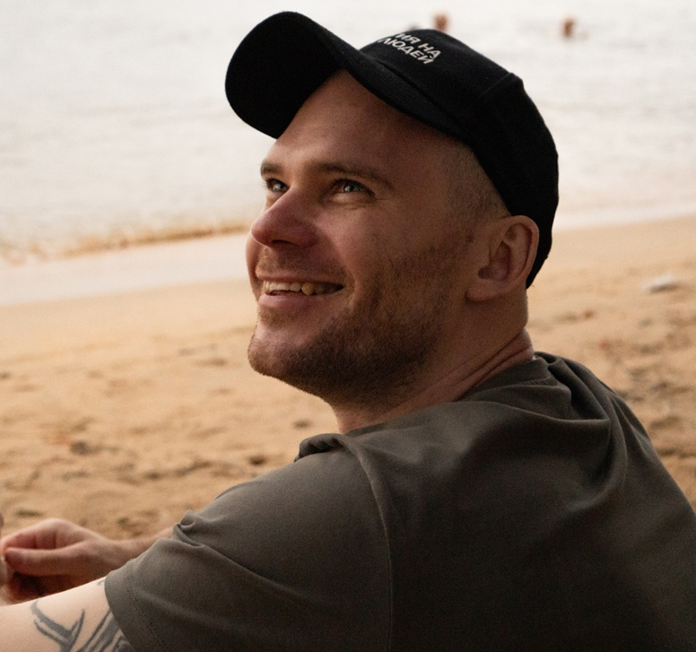
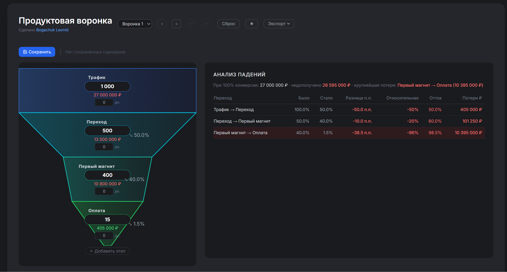
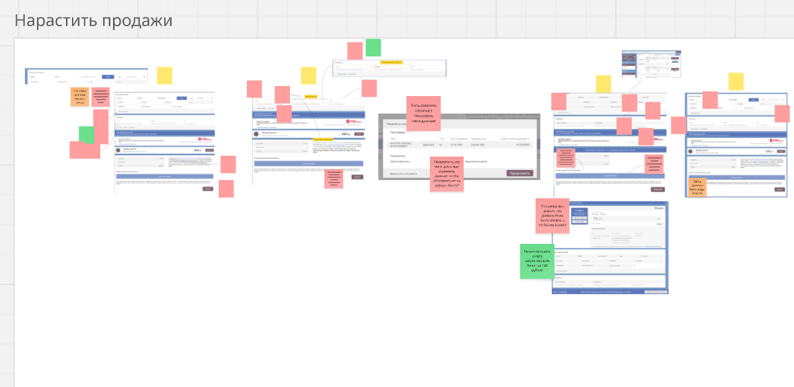

[ 01 ]
Конверсия C0/C1
2,88%
→
3,74%
+30%
Рост конверсии на каждом цикле оптимизации
Product Manager · Middle+
Ращу конверсии и выручку, запускаю продукты с нуля в EdTech и образовательных сферах. Провожу продукт от Discovery до Delivery: опираюсь на данные и боли пользователей, экспериментирую с AI для ускорения достижения результата.

Портфель из 15+ цифровых продуктов в Яндекс Практикуме, TravelTech-агрегатор в Норникеле, сайт для подбора психологов и менторов. Специализация — конверсия, монетизация и юнит-экономика в условиях, когда легко расти уже не получается.
Что за собой оставили 6 лет в продукте — по тем метрикам, которые двигал в Яндекс Практикуме, М-Консалт, N Travel и собственном проекте.
Рост конверсии на каждом цикле оптимизации
Средний чек без расширения бюджета
▲ +1,68 млн ₽ сверх плана
Перевыполнение плана — плюс 1,68 млн ₽ к цели
Churn: клиент остаётся с продуктом дольше
Снижение себестоимости по каналам
Удержание и финэффективность на уровне
Ключевой опыт в EdTech + собственный 0→1 проект. Домены менялись четыре раза — переносится способ разбираться, а не знание рынка.
Рост фичами кончился, конверсия стоит месяцами, а где именно теряются деньги — непонятно. Это моя основная работа последние два года.
Есть идея и рынок, нет пути от гипотезы до первых денег. Проходил этот путь и как продакт, и как основатель — с окупаемостью на выходе.
Выручка растёт, прибыль нет. Умею находить COGS в местах, где его не искали, — обычно это дублирующиеся процессы, а не подрядчики.
Данные собираются, но решения всё равно принимаются интуитивно. Соберу отчётность, которую будет понимать не только продакт.
Я буду задавать вопросы о приоритетах и просить обоснование. Если решения уже приняты и нужны руки — я дорогой и неудобный выбор.
Там, где нельзя трогать монетизацию, две трети моей пользы просто не работают.
В прямых продажах и маркетинге у меня опыта мало: это зона команды, с которой я работаю в связке.
С командой разработки работаю как партнёр по конкретным флоу — от ТЗ до релиза (озвучка уроков на TTS). Вести дев-отряд в режиме постоянных релизов — не моя сильная сторона.
Три смежные специальности жили как три отдельные программы с дублирующимся контентом и тремя производственными потоками. Себестоимость съедала маржу, а B2B-клиенты не могли купить обучение на команду — им нужен был один формат, а не три несовместимых.
Пересобрал воронку и свёл три программы в единый формат с общим ядром и специализированными ветками. Производство стало одним потоком вместо трёх.
От глубокой заточки программы под каждую специальность. Два других пути — три облегчённые версии (сохраняют специфичность, но не решают проблему себестоимости) или закрытие двух специальностей из трёх (потеря аудитории и выручки) — отверг. Цена: узкий сегмент получил менее заточенный контент, и пришлось договариваться с методистами.
Себестоимость обучения снизилась на 20–60% в зависимости от канала. Открылся B2B-канал продаж, которого до этого не существовало.
Если бы в бизнесе уже был сильный B2B-запрос на глубокую специфику, дешевле могло оказаться сохранить три формата, а не один. Сейчас бы проверил этот спрос CustDev до пересборки.
Рост конверсии упирался в потолок. Очевидный способ поднять средний чек — скидочные механики, но они приучают аудиторию к скидке и разрушают экономику на длинном горизонте.
Собрал премиум-сегмент на основе CustDev, JTBD и модели Кано — в него попало только то, за что сегмент реально готов доплачивать. Параллельно провёл серию A/B-тестов воронки и онбординга в DataLens.
Не переносил в премиум ничего из базового тарифа. Быстрый путь (взять работающее и закрыть платно) дал бы рост ARPU за недели, но обесценивает основной продукт — я его отверг. Цена: премиум взял 12% сплита продаж, а не больше; потолок ниже, чем у агрессивной упаковки, — это был осознанный обмен.
Средний чек +8%. Базовая конверсия не просела — это была главная проверка. Конверсия из бесплатного триала в первую покупку выросла с 2,88% до 3,74%.
Сейчас провёл бы CustDev на более раннем этапе — чтобы проверить готовность доплачивать до сборки, а не после. Это сократило бы цикл на 3–4 недели.
Контента много, но потреблялся он только чтением. Аудиоформат был закрыт по экономике: человеческая озвучка всего каталога стоит столько, что обсуждать её бессмысленно.
Спроектировал и внедрил ML-автоозвучку на технологиях Алисы, интегрировал TTS в ключевые пользовательские сценарии.
От качества человеческого голоса — ради полного покрытия каталога. Видеоформат (дорого и долго) и озвучка только флагманов (не меняет поведение большинства) отверг. Цена вышла сразу: жалобы на синтетический голос. Заменил модель на ту, которую воспринимали лучше, — жалобы прекратились.
Фичей воспользовались 61% активных пользователей, CSAT 8+/10. Изменился сценарий обучения: люди стали слушать материал и конспектировать от руки. Выручка домена выросла на 2% — эффект не изолировал, приписывать фиче не могу.
Протестировал бы качество голоса на узкой когорте до полного каталога — это сняло бы первую волну негатива до масштабирования.
Собственная B2C-платформа подбора экспертов, с нуля до окупаемости. 100+ глубинных CustDev-интервью, команда 5 человек, полное владение P&L — LTV, CAC, маржа. Средний чек 7 600 ₽, операционная маржинальность 40%. Когда экономика продукта — это твои деньги, привычка проверять юнит-экономику до запуска появляется быстро.
Погружение в продукт и данные: воронка, юнит-экономика, CustDev со стейкхолдерами. На выходе — карта метрик и воронки: на каких шагах теряются деньги. Без предложений «переделать всё».
Бэклог приоритизирован по RICE, план первых экспериментов согласован с командой и аналитикой — до всякого кода.
Первые два-три A/B-теста запущены, быстрые победы сняты. Результаты фиксирую в отчётности, даже если гипотеза не подтвердилась.
Первые тесты — не финал: цикл «гипотеза → A/B-тест → вывод → новая гипотеза» повторяется. Так продукт растёт каждую неделю, а не разовым усилием.

Каждая гипотеза до запуска получает оценку по RICE и предполагаемый эффект в деньгах. После запуска — замер и вывод, в том числе «не сработало». Гипотез, которые не подтвердились, у меня больше, чем подтверждённых, — и это нормальная пропорция.
Мой продукт: воронка для оценки гипотез →Глубинные интервью, JTBD, CJM. 100+ интервью в собственном проекте научили главному: пользователь почти никогда не говорит, что ему нужно, — он рассказывает, что делал вчера.

Полное владение направлением: Discovery, роадмап, монетизация, работа с разработкой и аналитикой. Формат, в котором приношу больше всего.
Конкретная задача с началом и концом: запуск продукта, пересборка воронки, вывод направления в прибыль. Работал так с М-Консалт.
Ограниченная диагностика: воронка, юнит-экономика, приоритеты. На выходе — где теряются деньги и что делать первым.
Вы рассказываете о продукте, метриках и болевых точках. Я — о себе, отвечаю на вопросы.
Формат на ваш выбор — тот, который покажет больше.
Согласуем формат, ответственность и дату выхода.
Если задача похожа на мои — напишите. Отвечаю в течение дня, первый созвон 30 минут, без подготовки с вашей стороны.